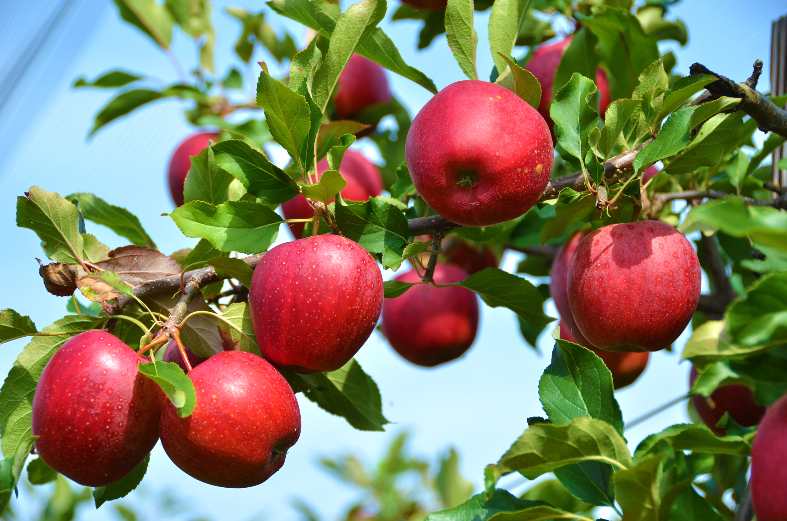

النعناع هو نبات عشبي معمر ذو رائحة نفاذة محببة ينبت على أطراف السواقي والمجمعات المائية يستخدمه أهل المدينة كتوابل لبعض أطباق الطعام وفي نكهة وتعطير الشاي الاحمر او الاخضر
أشـجار الـتـوت
اشتهرت مدينة الطائف منذ القدم بمحاصيلها الزراعية المتنوعة كالتوت وذلك لوجود التربة الخصبة فيها وعذوبة مياه الري فيها التي تتواجد في سدودها العديدة وتحوي على عدة مدرجات زراعية رائعة التي تمثل اللوحة الطبيعية الخلابة
أشـجار الخـوخ
تعد الخوخ من اشهر الفواكه الربيعية ويحتوي الخوخ على العديد من الفيتامينات والمعادن المهمة لمختلف الوظائف في الجسم كما أنه يحتوي على نسبة عالية من الماء والالياف ولا يحتوي أي من الدهون

أشـجار الـتـفاح
تكثر زراعة التفاح بمناطق عديدة بالمملكة ومنها المنطقة الغربية حيث أنه يحوي على الكثير من العناصر الغذائية وغني بالسعرات الحرارية والألياف والسكر والبروتين ويقوي جهاز المناعة